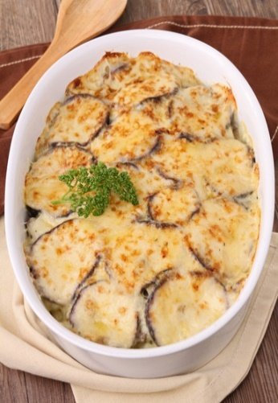

Gratin d'aubergines au steak et à la feta
Ingredients
4×
- 4 aubergines
- 1 oignon
- huile
- 4 steaks hachés
- 4 tomates
- 2 c. à s. de basilic
- 2 c. à s. de concentré de tomates
- 1 cube de bouillon
- sel
- poivre
- 1 bloc de feta
- 15 g de gruyère râpé

Préparation
Étape 1
Couper 4 aubergines en fines tranches et les cuire à la vapeur.
Étape 2
Rissoler 1 oignon dans un peu d’huile, puis ajouter 4 steaks hachés et les émietter dans la poêle.
Étape 3
Quand la viande est colorée, ajouter 4 tomates en petits dés et 2 c. à s. de basilic. Incorporer 2 c. à s. de concentré de tomates, 1 cube de bouillon et 120ml d’eau en remuant. Cuire doucement 5min. Ajouter du sel et du poivre.
Étape 4
Dans un plat à gratin, étaler les aubergines puis la viande. Émietter 1 bloc de feta par-dessus, parsemer de 15 g de gruyère râpé et gratiner environ 5min sous le gril.